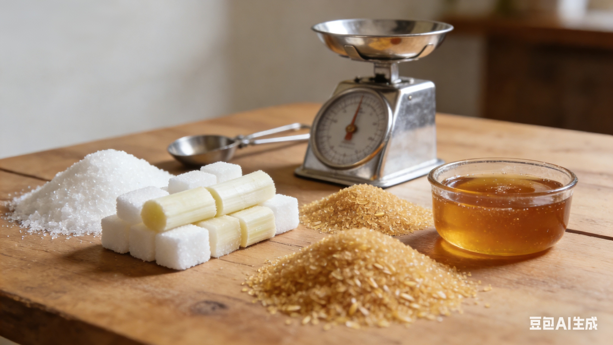
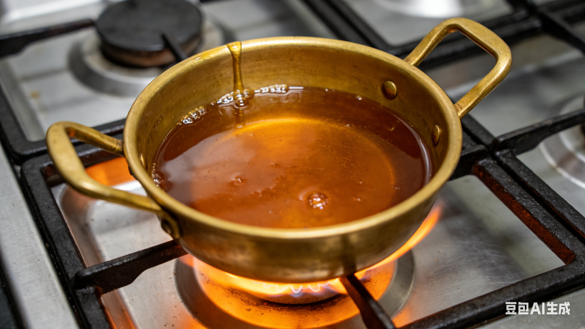
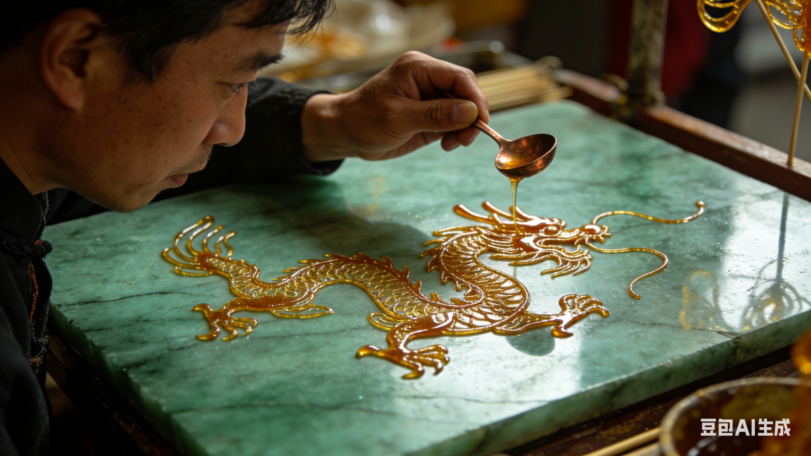
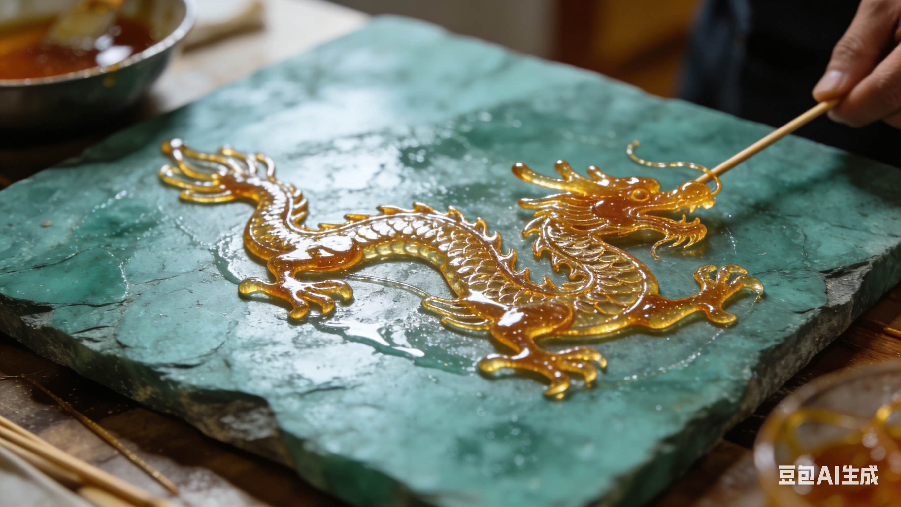
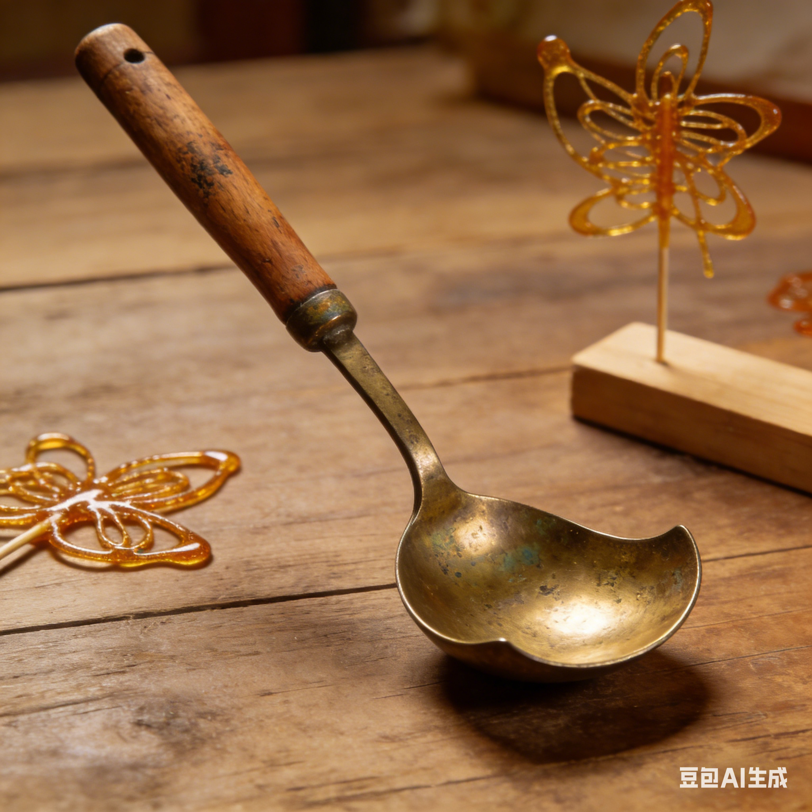
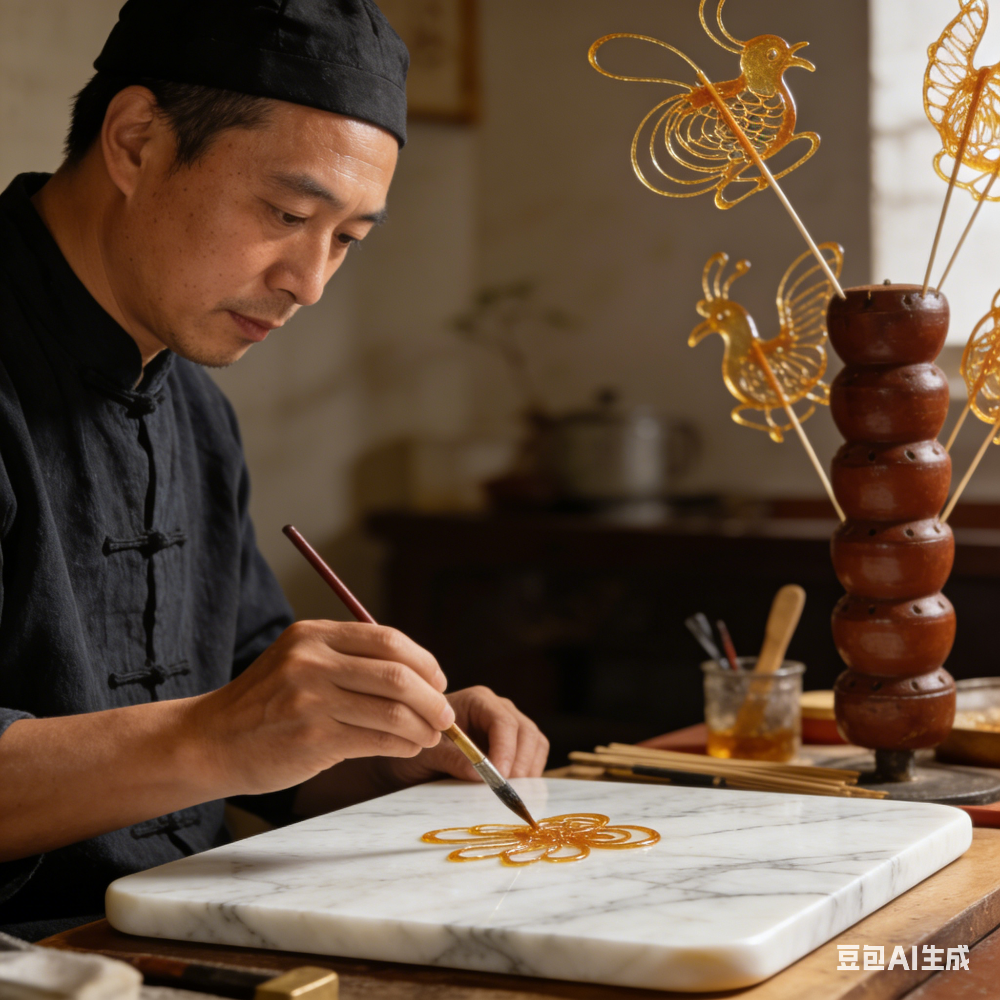
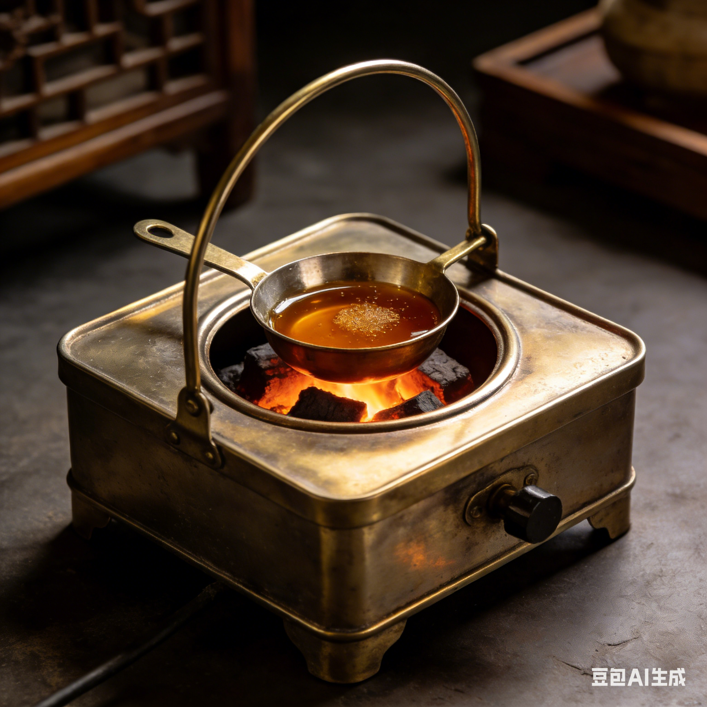
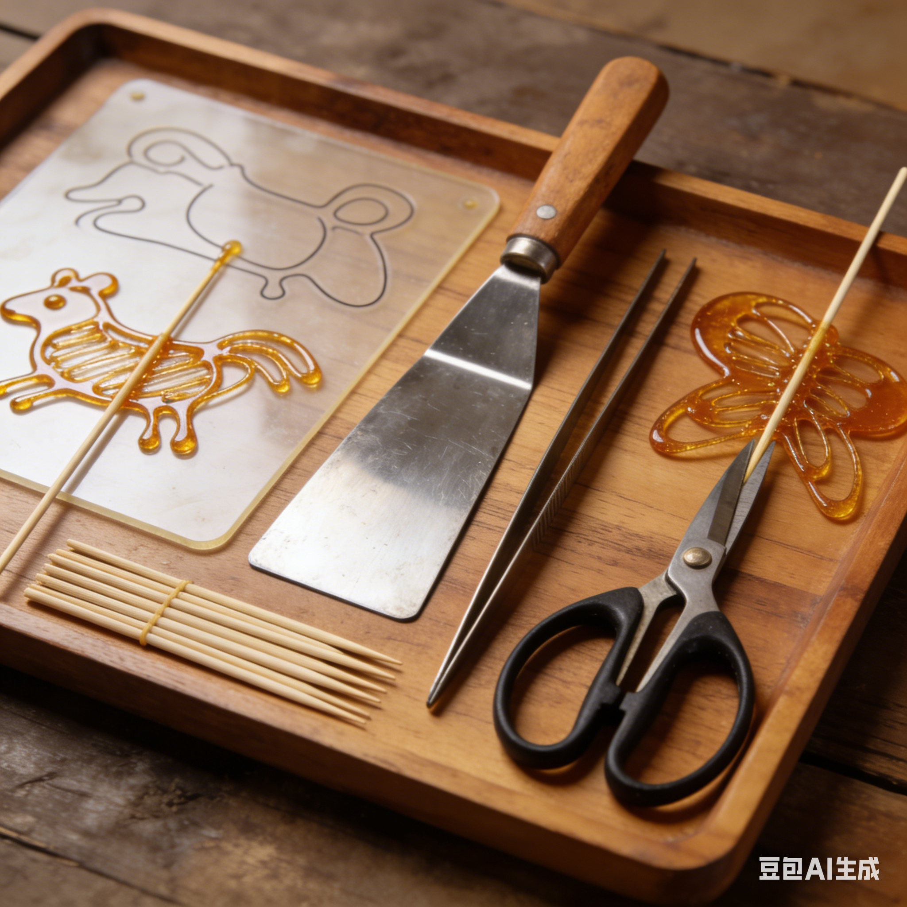

非遗糖画数字传承馆
以糖为墨，以勺为笔，揭秘糖画从液态糖浆到精美艺术品的转化过程

选择优质白砂糖或冰糖作为原料，按照特定比例加入清水。传统配方通常为糖与水按2:1的比例混合，这是保证糖浆色泽和延展性的关键。
熬糖过程中需要严格控制火候，先用大火将糖水煮沸，然后转为小火慢熬，期间需要不断搅拌防止糖浆糊底。

熬糖是整个制作过程中技术含量最高的环节。糖浆需要熬制到160-180°C之间，这个温度下糖浆会呈现出琥珀色，并且具有合适的黏稠度。
有经验的艺人通过观察糖浆的颜色、气泡和拉丝状态来判断熬制程度。熬好的糖浆需要立即离火，防止温度过高导致糖浆变苦。

在光滑的大理石板或金属板上涂抹一层薄薄的食用油，防止糖浆粘连。艺人手持铜勺，舀起适量糖浆，手腕悬空移动，让糖浆如丝般流淌在板面上。
绘制过程中需要一气呵成，不能中断。线条的粗细、疏密、快慢都会影响最终效果。传统图案有龙、凤、十二生肖等，现代糖画题材更加广泛。

糖画绘制完成后，需要等待几十秒让糖浆自然冷却固化。冷却时间与环境温度、糖浆厚度有关，通常需要30-60秒。
在糖浆尚未完全硬化时，艺人会用铲刀小心地将糖画从板面剥离，然后插入竹签或木棍作为手柄。完全冷却后的糖画变得坚硬透明，可以长时间保存。
工欲善其事，必先利其器。糖画制作需要专业的工具

糖画的主要绘制工具，通常为黄铜制成。铜勺导热均匀，便于控制糖浆流量。勺嘴的形状和大小决定了线条的粗细。

糖画的绘制平台，表面光滑平整，导热性好，便于糖浆快速冷却定型。使用前需涂抹一层薄油防粘。

传统的炭火炉或现代的小型燃气炉，用于加热和保温糖浆。需要能够精确控制火候。

包括铲刀（起画用）、竹签（做手柄）、油刷（涂油防粘）、温度计（监测糖温）等。
优质的材料是制作精美糖画的基础
最常用的糖画原料，纯度高的白砂糖熬制出的糖浆色泽透明，口感清甜。
品质更高的原料，熬制出的糖浆更加晶莹剔透，保存时间更长。
按比例与糖混合，用于调节糖浆浓度和熬制过程中的化学反应。
涂抹在板面上防止糖浆粘连，通常使用无色无味的植物油。
掌握这些技巧，你也能制作出精美的糖画
熬糖温度是关键，温度过低糖浆不易凝固，温度过高糖浆会变苦。最佳温度范围是160-180°C。
绘制时手腕要稳，移动要流畅均匀。线条的连贯性决定了作品的完整度。
下笔前心中要有完整的图案构思，糖画要求一气呵成，不能修改。
糖浆冷却速度快，需要把握好绘制和起画的时间窗口，避免糖画断裂。